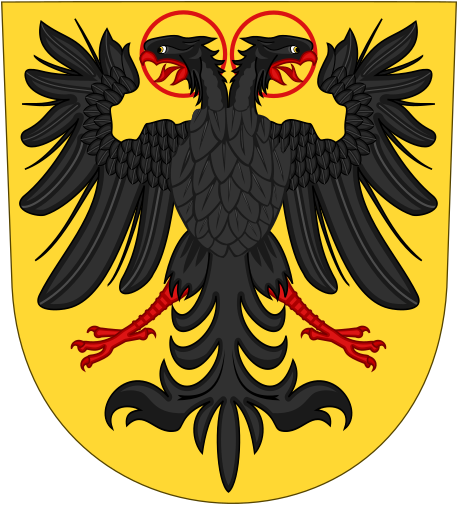
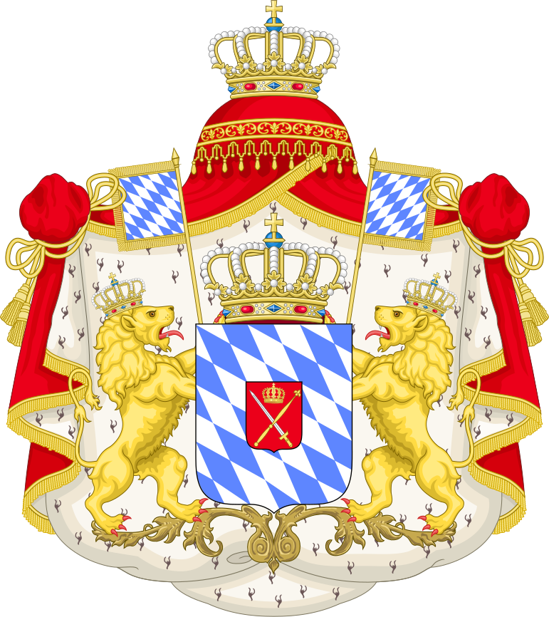

 <!DOCTYPE html>
<html>
<meta charset="UTF-8">
<head>
    <link rel="icon" href="Прапор Швейцарії.png" type="image/x-icon">
    <link rel="stylesheet" href="Icторичне вікі головна сторінка .css">
    <link rel="preconnect" href="https://fonts.googleapis.com">
    <link rel="preconnect" href="https://fonts.gstatic.com" crossorigin>
    <link href="https://fonts.googleapis.com/css2?family=Roboto:ital,wght@1,700&display=swap" rel="stylesheet">
    <title>Historical Wiki</title>
<header>
    

<nav id="menu1">
<ul>
<li><a href="index.html">Головна Сторінка</a></li>
<li><a href="історичні постаті .html">Історичні Постаті</a></li>
<li><a href="">Історичні Події</a></li>
<li><a href="Держави .html">Держави</a></li>

<li><a href="#m4">Спілнота</a>
<ul>
<li><a href="#m3_1">Статьї</a></li>
<li><a href="#m3_2">Чат</a></li>
<li><a href="#m3_3">Учасники</a></li>
<li><a href="#m3_4">щось ще</a></li>
<li><a href="#m3_5">Черепахи</a></li>
</ul>
</li>
<li><a href="#m5">Про Автора</a></li>
</ul>
</nav>

</header>
<main>
<h2><i><b>ДЕРЖАВИ</b></i></h2>
      <div>
         <div class="post">
          
         <h4>Вивчайте великі імперії, республіки, королівства та інші форми політичних утворень, які справляли значний вплив на розвиток цивілізацій.

         Зануртеся в світ історії, де кожна держава – це окрема історія з унікальним внеском у великий ланцюг подій.</h4>
         </div>
  </div>


  <h2><i><b>СТАТТІ:</b></i></h2>
<div><div class="footer-column">
     

    <div class="stattja">
      
      
      <div>
        <h3></h3>
        
        <a href=""><h2>СРІ<h2></a>
      </div>
    </div>
   
    <div class="stattja">
      
      <div>
        <h3></h3>

        <a href="#"><h2>Королівство Баварія</h2></a>
      </div>
    </div>
  </div>

    </div>
  </div>

  <footer>
  <div>
    <div>
      <div>
        
      </div>
      <div class="footer-columns">
        <div class="footer-column">
          <h3>Про</h3>
          <p>
           <h4>Історію, правителів, війни, союзи, прапори та герби</h4>
          </p>
        </div>
        <div class="footer-column">
          <h3>НЕ НАТИСКАЙ!!!!!!</h3>
          <p>
           <h4>Не натискай на посилання знизу, або інакше.....</h4>
            <h4><br><strong>Ємаіл: <a href="https://www.youtube.com/watch?v=dQw4w9WgXcQ">NeNatyskaj@mail.com</a></strong></h4>
          </p>
        </div>
      </div>
    </div>
    <center>
      <small><h4>Copyright &copy; 1889Braunau am Inn,UpperAustria,Austria-Hungary corp.<h4></small>
    </center>
  </div>
</main>
</footer>
